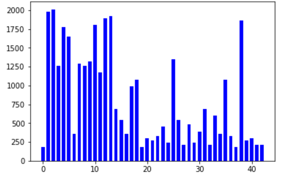
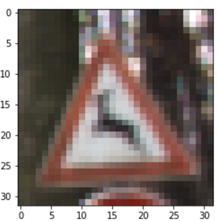
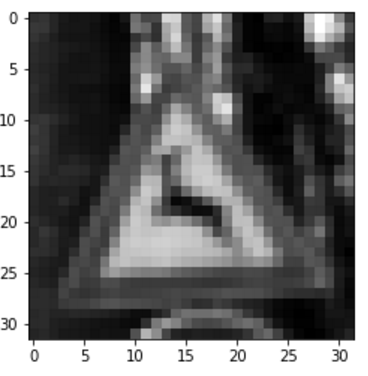
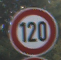
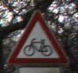
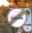

I used the pandas library to calculate summary statistics of the traffic signs data set:
Here’s a bar chart showing the distribution of different class of traffic signs from the training data. The x-axis shows the traffic sign type index, and the y-axis shows the count of training images for that class.
We can see that it’s not distributed evenly. Some traffic signs appear much more often than others in this training data set.

I did two steps for preprocessing the images.
First I turn image into grayscale. Color is not that useful (compared with shape or contrast) when identifying traffic sign. Converting from RGB color to grayscale greatly reduces the data size and makes our training more efficient.


Then I normalize the picture. We learned that putting all input data within the range of (-1,1) with a mean of 0 will makes our training more efficient.
My final model consisted of the following layers:
Here’s the component that I prepared for training the model:
- Cost function: use softmax cross entropy between onehot encodeded prediction and label
- Optimizer: Use AdamOptimizer
- Batch size: 128
- Number of epochs: 30
- Learning rate: 0.0005
My final model results were:
training set accuracy of 1.000
validation set accuracy of 0.926
test set accuracy of 0.928
If an iterative approach was chosen:
In the begining, my choice of architecture was very similar to the final one, except that the output channels and fully connected nodes are much much smaller, like 5~10x smaller.
I found that my training and validation accuracy couldn’t raise more than 85%. I tried with different number of batch size, number of epochs, and learning rate, none of that really helped.
I thought my model might not be complicated enough, thus it might be under fitting. So I increase the size of the convolution output, so is the fully connected layer size. But it was not very easy to find a good number. When I set the network size to be too big, the validation accuracy actually decreases. After several trial, I tried to lower the learning rate from 0.001 to 0.0005, and it does increase the validation accuracy and the accuracy over later epochs are much more stable.
Batch size and number of epochs. The latter was easier to tune because a higher number of epochs combined with moderate learning rate will certainlly always makes the result better. Batch size is a bit weird and I don’t fully understand how it affected the result. I tried to make it bigger or smaller and finally set it to 128.
Convolution is certainly helpful because the traffic sign is a typical example of pixel patterns being features. Convolution combines low-level features (pixels) into higher-level features (patterns) and these higher-level features are bascially able to match the traffic sign’s design.
I didn’t use dropout layer. I tried to add it but unfortunately I didn’t find it generates much difference for my case.
If a well known architecture was chosen:
I chose the well-known LeNet architecture.
LeNet was designed to recognize written numbers. I think traffic sign has a lot of similarities when compared with written numbers because both features= line patterns (curve, straight line, dots) and none of then features colors or lighting conditions.
The training accuracy is 100%, and the validation and test accuracy are around 93%. I think the result looks good. It might be a little overfitted, but overall still generalizes well.
Here are five German traffic signs that I found on the web:



The first image might be difficult to classify because …
Here are the results of the prediction:
| Image | Prediction |
|---|---|
| Speed limit (120km/h) | Speed limt (120km/h) |
| Yield | Yield |
| Road work | Road work |
| Bicycles crossing | Bicycles crossing |
| End of no passing | End of no passing |
The model was able to correctly guess 5 of the 5 traffic signs, which gives an accuracy of 100%. This is even better than the test accuracy in previous training process.
First image: Speed limit (120km/h). The prediction results with probabilities:
class: 8, probability: 1.0, signname: Speed limit (120km/h)
class: 7, probability: 3.873366904993958e-11, signname: Speed limit (100km/h)
class: 40, probability: 6.261631431457929e-14, signname: Roundabout mandatory
class: 0, probability: 5.136434261929679e-17, signname: Speed limit (20km/h)
class: 14, probability: 2.312363239864558e-19, signname: Stop
Second image: Yield. The prediction results with probabilities:
class: 13, probability: 1.0, signname: Yield
class: 35, probability: 1.638729776876069e-11, signname: Ahead only
class: 1, probability: 1.946183266025373e-16, signname: Speed limit (30km/h)
class: 15, probability: 7.69797505273448e-17, signname: No vehicles
class: 9, probability: 6.696285800712366e-17, signname: No passing
Third image: Road work. The prediction results with probabilities:
class: 25, probability: 1.0, signname: Road work
class: 19, probability: 1.1825431211782023e-15, signname: Dangerous curve to the left
class: 22, probability: 1.6098153653632577e-16, signname: Bumpy road
class: 29, probability: 1.6576936049217865e-17, signname: Bicycles crossing
class: 23, probability: 3.4634509781871587e-19, signname: Slippery road
Forth image: Bicycles crossing. The prediction results with probabilities:
class: 29, probability: 1.0, signname: Bicycles crossing
class: 28, probability: 3.4673536264406835e-10, signname: Children crossing
class: 24, probability: 4.831855943999985e-13, signname: Road narrows on the right
class: 22, probability: 1.8851250855461688e-13, signname: Bumpy road
class: 35, probability: 1.779948428503198e-14, signname: Ahead only
Fifth image: End of no passing. The prediction results with probabilities:
class: 41, probability: 1.0, signname: End of no passing
class: 42, probability: 5.07171145358587e-11, signname: End of no passing by vehicles over 3.5 metric …
class: 32, probability: 8.970013967712909e-12, signname: End of all speed and passing limits
class: 6, probability: 2.978466811295183e-13, signname: End of speed limit (80km/h)
class: 12, probability: 1.3348034344360304e-15, signname: Priority road